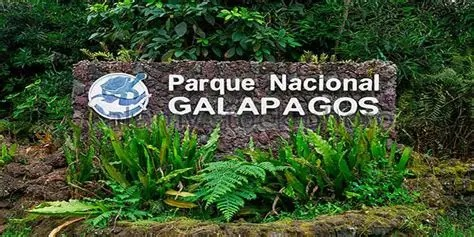
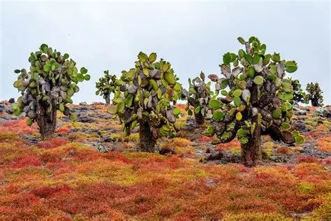

1. Centro de Interpretación del Parque Nacional Galápagos:
Sendero de ~2 km entre cactus nativos (Opuntia megasperma) y aves endémicas. Termina en una playa solitaria, ideal para conectar con la naturalezaUn espacio interactivo y educativo sobre la historia natural y humana del archipiélago, con exhibiciones,
talleres y un recorrido por flora autóctona como cactus endémicos
2. Cerro Tijeretas (Frigatebird Hill):
Excelente para senderismo y observación de aves, especialmente fragatas (tijeretas). Ofrece vistas
panorámicas del puerto y bahía, y es ideal para snorkeling junto a lobos marinos
3. Playa Punta Carola y Las Tijeretas:
Perfectas para nadar, practicar surf (principiantes), y disfrutar del atardecer entre lobos marinos
y piqueros de patas azules
4. Malecón Ecológico Charles Darwin:
Un paseo costero con plataformas de observación, zonas verdes, arte y frecuentes encuentros con leones
marinos descansando entre los visitantes
5. Jardín de OpuntiasSendero:
de ~2km entre cactus nativos (Opuntia megasperma) y aves endémicas. Termina en una playa
solitaria, ideal para conectar con la naturaleza